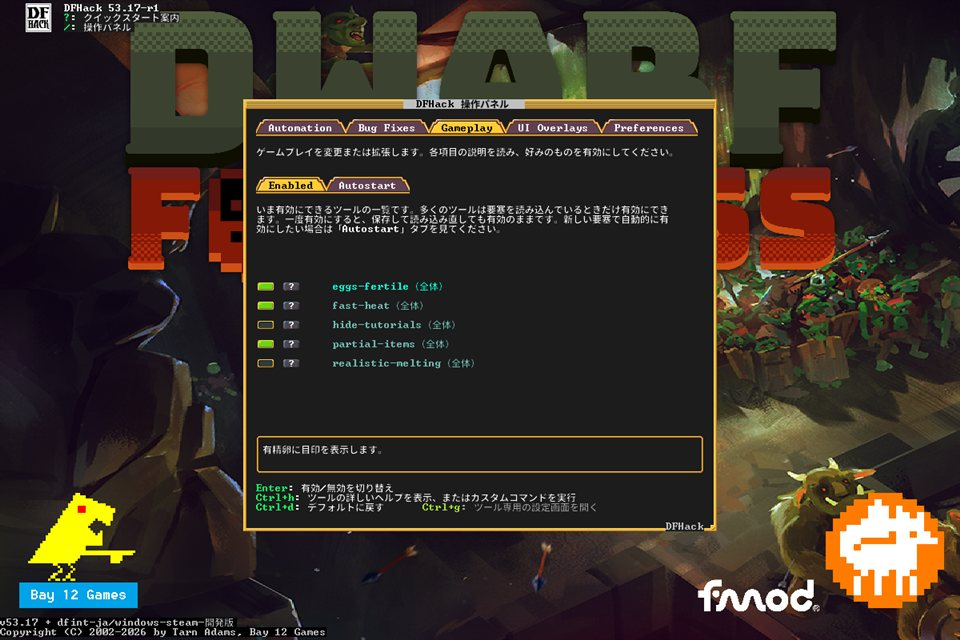

どんなふうに見えるか



日本語になるところ
- メニューと説明文（タイトル、設定、世界生成、闘技場）
- 要塞モード（建設、在庫、労働、貴族、交易、知らせ、戦闘の記録）
- 冒険モード（キャラクター作成、会話、戦闘）
- 伝説モード（歴史、人物、芸術品）
- 生き物・品物・材質・建物の名前
- 住民の思考や会話、怪物の姿の描写
- DFHack の画面（操作パネル、建設の計画、隊商の取引）
ゲーム中に Ctrl+F2 で、日本語と英語を切り替えられます。
ゲームのファイルは書き換えません。
Dwarf Fortress.exe にも data\ の中身にも手を加えません。
外すときは置いたものを消すだけで元に戻ります。セーブデータもそのまま使えます。
入れかた
DwarfFortress_JP.zip をダウンロードし、 中身を Dwarf Fortress のフォルダにそのまま重ねてコピーするだけです。 （過去の版は リリース一覧 から）
Dwarf Fortress\ dfhooks.dll dfhooks_dfint_ja.dll dfint-data\
DFHack を使っている場合は
dfhooks.dll がすでにあります。
それだけは上書きしないでください。残りの2つをコピーすれば動きます。
あとから DFHack を入れた場合も、そのまま動きます。
外しかた
置いた3つを消すだけです（DFHack を使っている場合は dfhooks.dll を残してください）。
ほかのMODと一緒に使えます
生き物や品物を追加するMOD、タイルセット、グラフィックMODとは、そのまま併用できます。 ゲームのデータを書き換えないので、MODを入れた世界に後から入れたり、外したりもできます。
- MODが独自に足した名前は、英語のまま表示されます。表示が崩れたり、半分だけ日本語になったりはしません。
- バニラの言葉を組み合わせた名前なら、そのまま日本語になることもあります。
- MODの名前も日本語にしたい場合は Issues で教えてください。
DFHack のように
dfhooks.dll を持つMODは、同じファイルを取り合うため一緒に使えません。
DFHack については併用できるように手当てしてあります。
英語のまま残るところ
- 人名・地名と、世界ごとに作られる名前。
- 長い名前は、画面に収まらないと途中で「…」と切られます。
- DFHack のタブの見出し（Automation など）とツールの名前。
誤訳や、英語のまま残っているところに気づいたら Issues で教えてください。
非公式のMODです。セーブデータのバックアップを取ってからお使いください。
ゲームが更新されると、しばらく動かなくなることがあります。